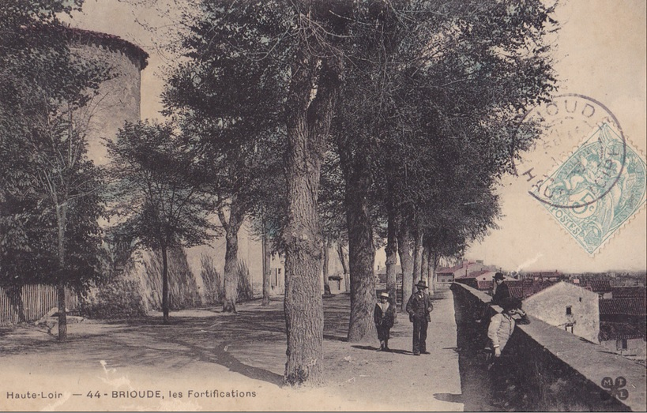
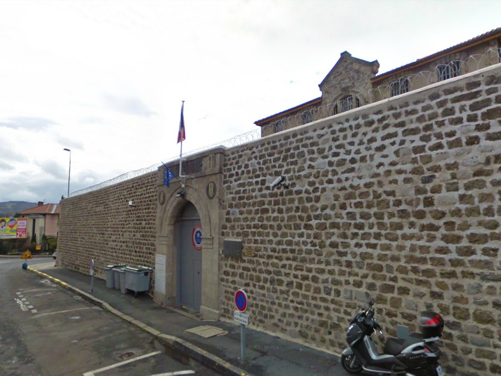
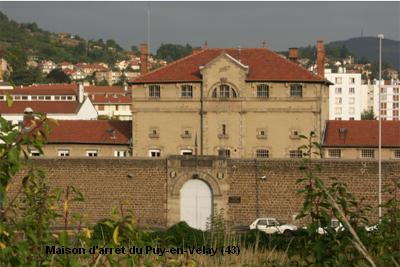
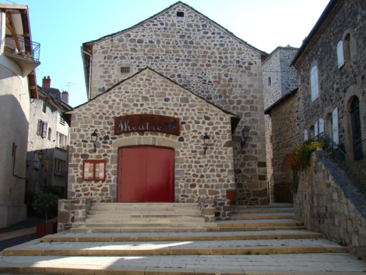

| Département | Images | Ville | Nom | Adresse | Période | Capacité | Histoire du lieu | Nombre d'exécutions |
| Haute-Loire (43) |  |
Brioude | Maison d'arrêt | Esplanade de Verdun | -1933 | 36 places (1933) | Située dans les fortifications, à l'arrière de la mairie comme à Yssingeaux, la prison de Brioude a été transformée en logements dans les années 1950. Cependant, certaines pièces, servant de caves, conservent sur les murs les traces des anciens détenus, et une réhabilitation historique pourrait être intéressante. Reportage sur la prison en 2013 |
Aucune exécution |
| Haute-Loire (43) |   |
Le Puy-en-Velay | Maison d'arrêt, de justice et de correction | 37, boulevard Bertrand | En service depuis 1897 | 48 places (1962) 46 places (2015) |
38 cellules pour hommes, 8 pour femmes. Construite à partir de 1880 selon un plan en T, la prison de la préfecture haut-ligérienne, toujours en activité, conserve sur son mur la trace de trois évasions de résistants entre 1943 et 1944 : ils furent 130 à parvenir à déjouer la vigilance des gardiens et à se faire la belle - en particulier le 1er octobre 1943, grâce à la complicité d'un gardien. Six éléments de la prison, dont la chapelle, sont inscrits aux Monuments Historiques depuis le 12 février 1987. Sur un plan patibulaire, la prison n'eut à héberger de condamnés à mort que sept fois entre 1908 et 1934, et la guillotine vint se dresser devant sa porte d'entrée pour un seul d'entre eux. | Une exécution en 1930. |
| Haute-Loire (43) |  |
Yssingeaux | Maison d'arrêt | Place de l'Hôtel-de-Ville | -1934 | Située à l'arrière de l'Hôtel-de-Ville, l'ancienne petite prison d'Yssingeaux n'a été que sommairement transformée dans son architecture : mais à l'intérieur, on y trouve un magnifique petit théâtre municipal. | Aucune exécution |
{kind=link}
{kind=link}
{kind=link}
{kind=link}